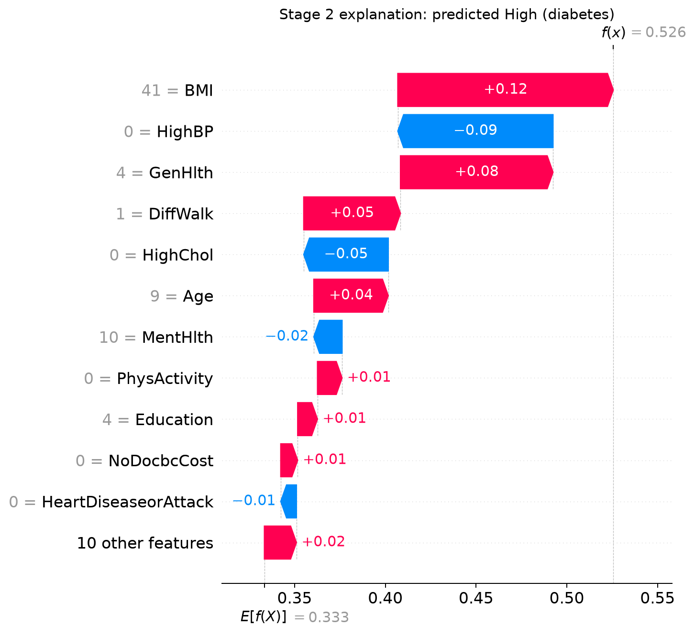
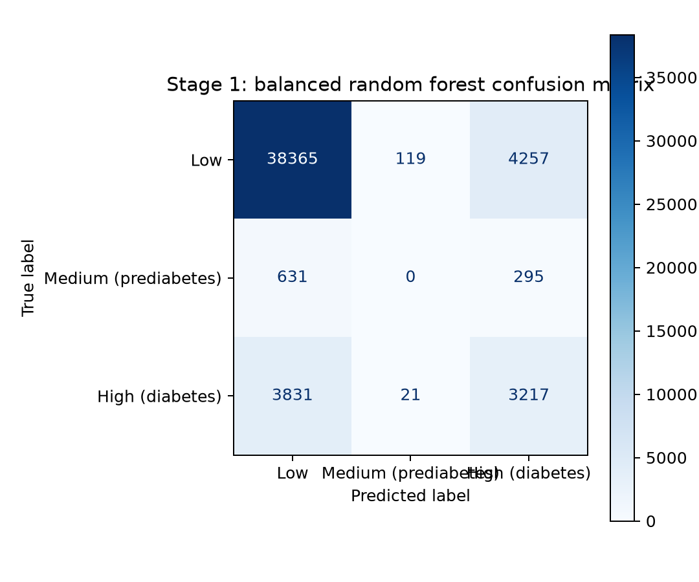

Four-stage workflow
From survey row to an evidence-rich Digital Twin
The hosted page presents checked model artifacts. The repository contains the reproducible Docker, Jupyter, Flask, Neo4j, SHAP, SMPL, and local Ollama workflow.
Predict
Estimate Low, Medium, and High class probabilities from 21 decoded BRFSS observations.
Explain
Rank patient-specific SHAP contributions alongside global permutation importance.
Simulate
Re-run the model after explicit manual edits and generate separate current and scenario twins.
Connect evidence
Assemble a temporary patient graph while Neo4j stores reusable definitions only.
Manual comparison
Current and scenario profiles remain distinct
Patient #104917 changes BMI from 41 to 36 and physical activity from 0 to 1. The probability change is model-derived and non-causal.
Current profile
ModerateBMI 41 · 52.6%
Comparison scenario
ModerateBMI 36 · 42.1%
Model evidence
Performance and explanations stay visible together
Patient explanation
SHAP contribution waterfall

Global evaluation
Confusion matrix

Top patient-specific factors
Contribution magnitude
Bars show absolute SHAP magnitude; the sign labels show direction within the model explanation.
Stage 4 evidence contract
A complete, temporary patient graph
The full local system combines every selected-patient observation and explanation with reusable Neo4j definitions. It does not persist patient nodes or invent direct causal risk edges.
Read implementation details